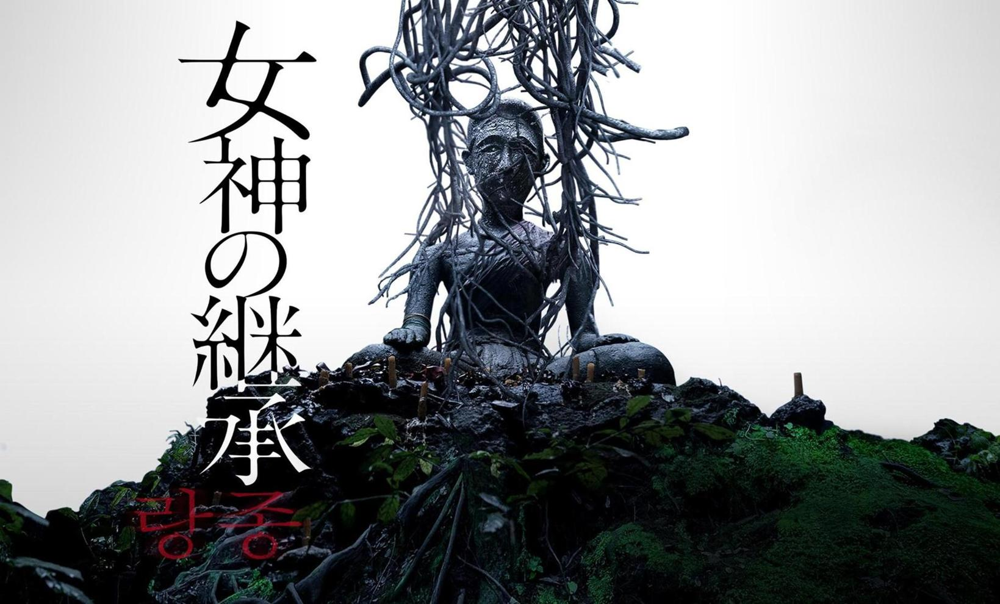
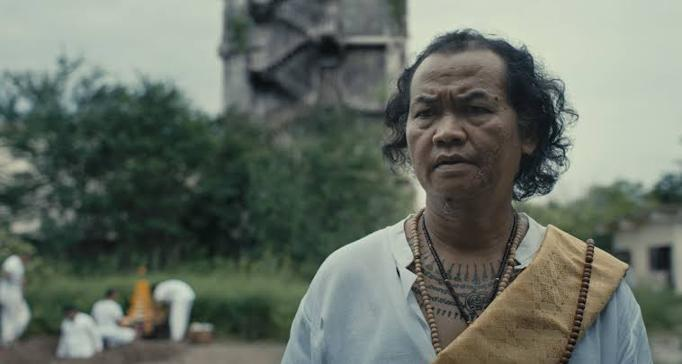

Amazonプライムビデオで「女神の継承」を見た。なんか評価が分かれそうだと思ったが、私はかなり面白かった。
全体的にはシンプルな話だが、ちょこちょこよくわからない部分もある。私はラストシーンでかなりぐっときたのだが、ラストでニムが、バヤンが自分の中にいる感覚に疑いを持っていることが明かされる。 私は、たぶんバヤンなんて初めからいなかったんじゃないのと考えている（精霊なんてこの世にいるはずがないと考えているから）。そういった信仰に対する皮肉を描こうとしている部分はたぶんある。でも、ニムがなぜ死んだのかってかなり謎なんだよな。バヤンなんていなかったオチが正しいとすると、ニムの死は自殺くらいしか説明がつかない。ここは謎。
あと、犬が象徴的に出てくるシーンが多い。タイの犬食文化批判なのかな。ラストで悪霊が大騒ぎするあたりではみんな犬っぽい動きになるのだが、悪霊の正体は犬なんじゃないかなと思った。ノイは犬食が禁止されてるにも関わらず犬を殺して食肉として売っていたようだし。
この映画で私的に魅力ナンバーワンなのはなんと言ってもサンティだ。

サンティは祈祷師で、悪霊を祓えそうな期待感（と、祓えずに返り討ちにされてくれそうなワクワク感）をうまく醸し出している。
確かサンティのニムの関係はちゃんと説明されてなかった気がする？が、初出のシーンはサンティが人々を集めてなんか祈ってたシーンだったはず。ニムが「まだこんな子供だましのようなことをやってるの？」とかなんとか言うと、サンティが「生活のためさ」とかなんとかいう。このシーンが最高。本当はすごい力を持っているけど、敢えてチープな祈りで小銭を稼いでいるのが逆に強キャラっぽい。でも妙に悪霊祓いに自信を持っていそうだったことから、私はこのへんでミンは助からない（そしてサンティは返り討ちにされる）と確信を持った。
私はホラー好きなので、こういう祈祷師とか霊能力者とか、怪異に対してこちらも特殊能力で対抗できるキャラクターが登場する作品に触れることは多い。総じてこういうキャラが好きだ。なんかすごくワクワクする。ニムが頼るくらいだからサンティは凄いんだろうなという感じが、アベンジャーズみたいでかっこいい。こういう、「この怪異は私では祓えないので師匠を呼びます」的なシーンは良い。安心感がすごい（ただしサンティは死ぬ）。
最後の方、パンがミンに騙されてドアを開けてしまって、サンティが返り討ちにされるシーン、ちょっと笑ってしまったもんな。そりゃそうだよ感がすごかった。
とまあこの映画はとても面白いんだけど、モキュメンタリーとしてのクオリティは今一歩かなと思う。このへんはたぶん日本のフェイクドキュメンタリーが異常にクオリティが高いだけだとは思うが（「放送禁止」とかの頃から歴史もすごい）。
あー面白かった。